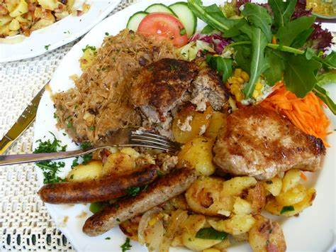

Wallpapers Nourriture Allemande - MaximumWall

Télécharger fonds d'écran nourriture
gratuitement

J’ai mangé de la nourriture pour animaux - URBANIA

la nourriture bio, bonne pour la
santé? -pieuvre.ca
Télécharger fonds d'écran nourriture gratuitement

Aliments nourriture assortis en lot de 48 en Plastique soufflé...

Nourriture - Page 29

Délices culinaires - la nourriture asiatique en 80 photos délicieuses ...
Télécharger fonds d'écran nourriture gratuitement

Nourriture déshydratée : Quels avantages ? - Devenir survialiste